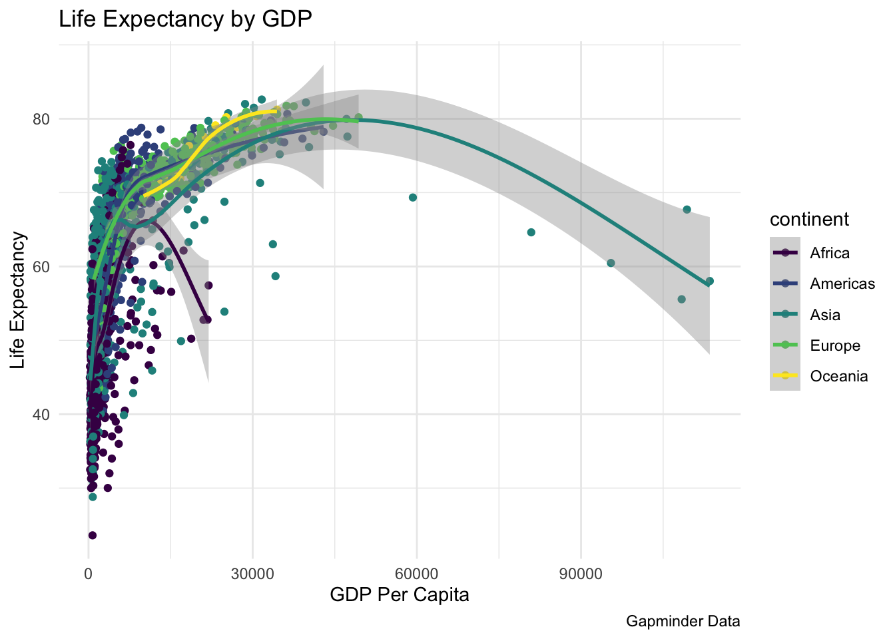

1
Background
2
Methods
3
Results
4
Discussion
Data Driven Report Demo
3
Results
Results indicate the per capita GDP and life expectancy are related in a non-linear way.

Life Expectancy
Min.
1st Qu.
Median
Mean
3rd Qu.
Max.
23.6
48.2
60.71
59.47
70.85
82.6
GDP Per Capita
Min.
1st Qu.
Median
Mean
3rd Qu.
Max.
241.2
1202
3532
7215
9325
113523